온 blog: Fulfiling creator’s experience
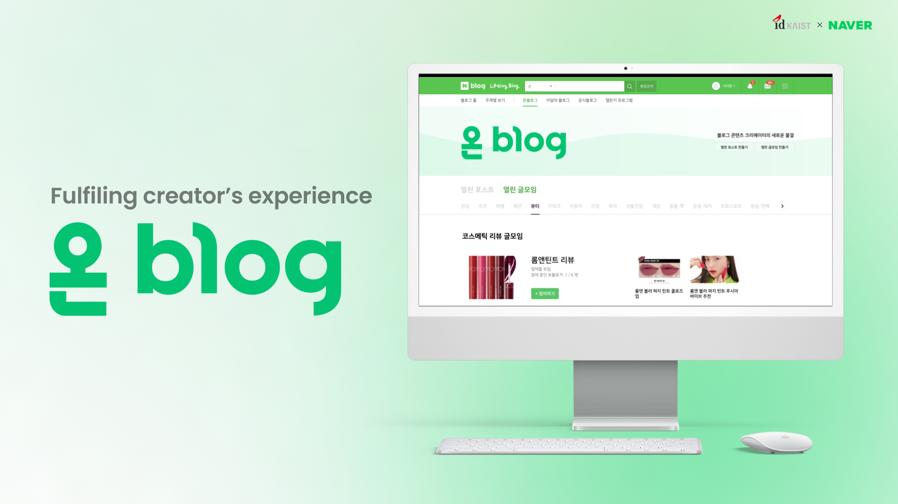
Introduction
Current creators on Naver platform have a lack of sense of accomplishment. With our solution, we want to strengthen the creators identity, create a platform for building relationships with other creators, and allow creators to show their indentity in the process.
온(on) blog is a new type of blogging system supporting a creator to find and strengthen one’s own identity asa creator through active cooperation with other creators. The “온” in 온 blog means: 👐온: 모든, ⤵️ON: 위, ☀️溫(온) : 따뜻한 (english: everything, up, warm).
Primary Research
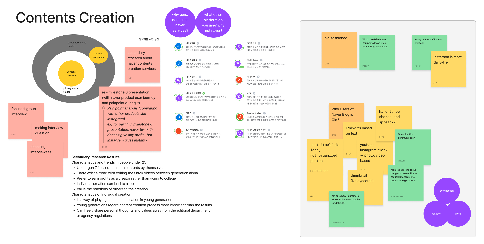
Talking with Creators
We conducted an in-depth interview with Naver Content Creators. We wanted to explore the commonalities and differences experienced by creators across various categories and the spectrum between newbies and professionals.
- Professional Naver blogger
| Active content creator using both Naver blog and Instagram for food reviews - Daily newbie blogger
| Active, not professional content creator using Naver blog for sharing their daily life - Webtoon creator
| Professional webtoon creator
Secondary Research
We took a closer look at content creation that happens on Naver platforms, and what drives or stops GenZ from doing it. From here, we we were able to notice a pain points related to old-fashioned style of Naver content creation, competition from other platforms used by young generation. From here, we took a next step in our research: understanding each content creation platform of Naver one-by-one, and interviewing content creators using different Naver platforms.
Studying the Creators
We looked for GenZ content creator’s characteristics, motivation for using different social media platforms and currently offered tools from Naver. We wanted to answer following questions:
- Why does GenZ makes content?
| What drives GenZ for content creation? What motivates them? - Why do they use social media?
| TikTok, Youtube, Instagram - what is the difference betweenn those for GenZ? What advantages do they see? - What tools does Naver offer for Content Creators?
| What tools are there on Naver to create better content? What are the pros and cons? What are common points between them? How does Naver stand out?
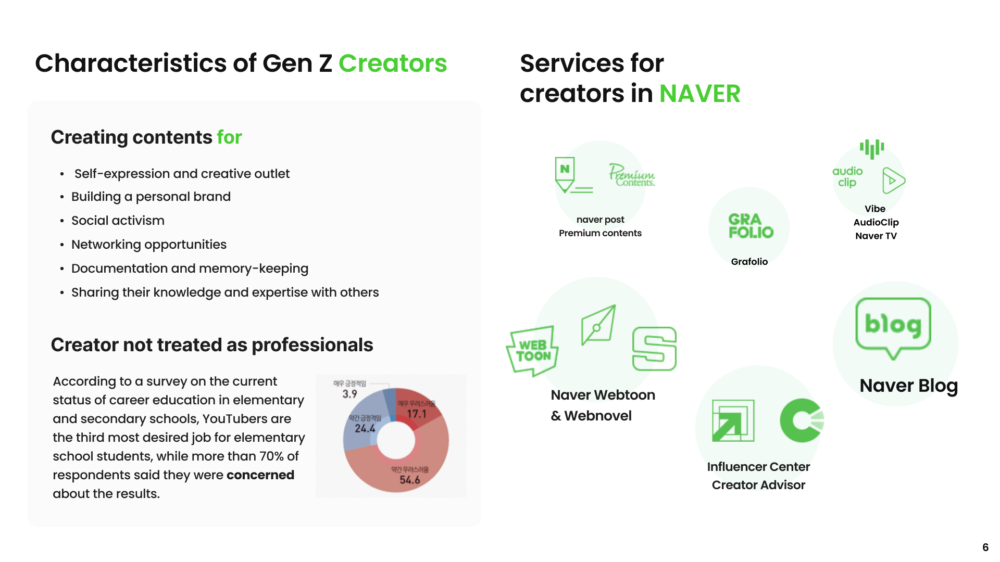
Services for creators in Naver
Naver offers wide scope of different platforms, from text-based blogging, video-driven Naver TV, or webtoons. We study the support each platform gives to the creators, and what tools it provides.

Result
Based on the primary and secondary research, we were able to organize the characteristics of Gen Z creators, reasons for creating content and most commonly used platforms.
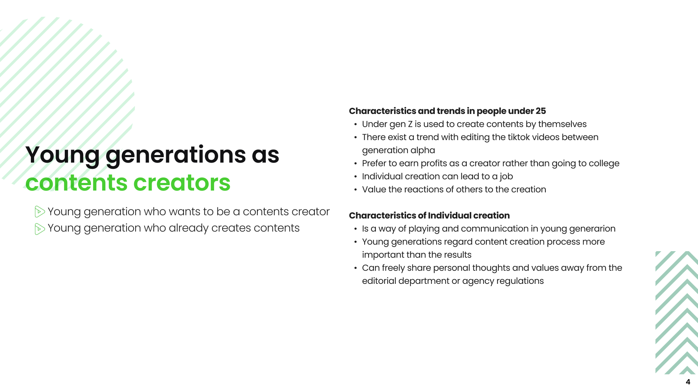
Persona and Journey Map
The research helped us narrow a persona of a Gen Z Creator. The interviews helped us create a step-by-step journey of what is like to become a Naver creator, from novice stage to THE infleuncer.
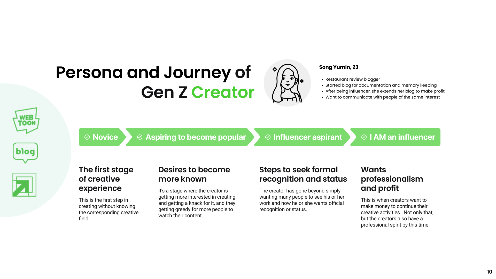
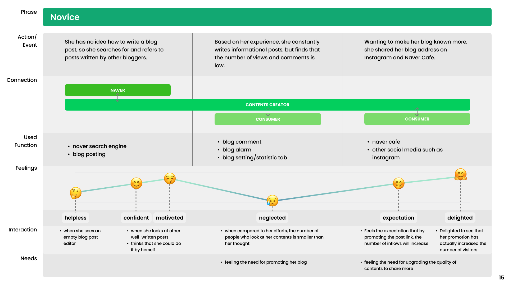
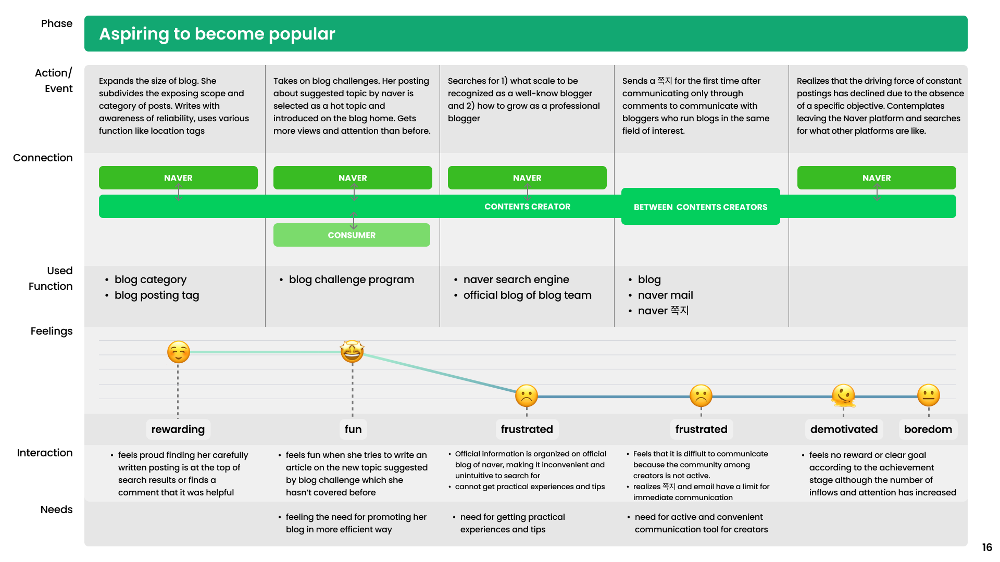
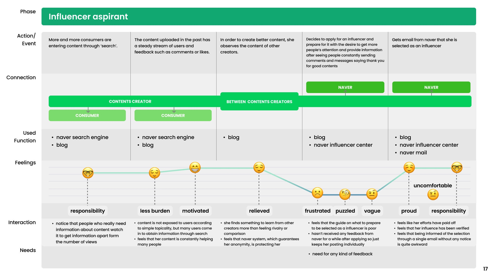
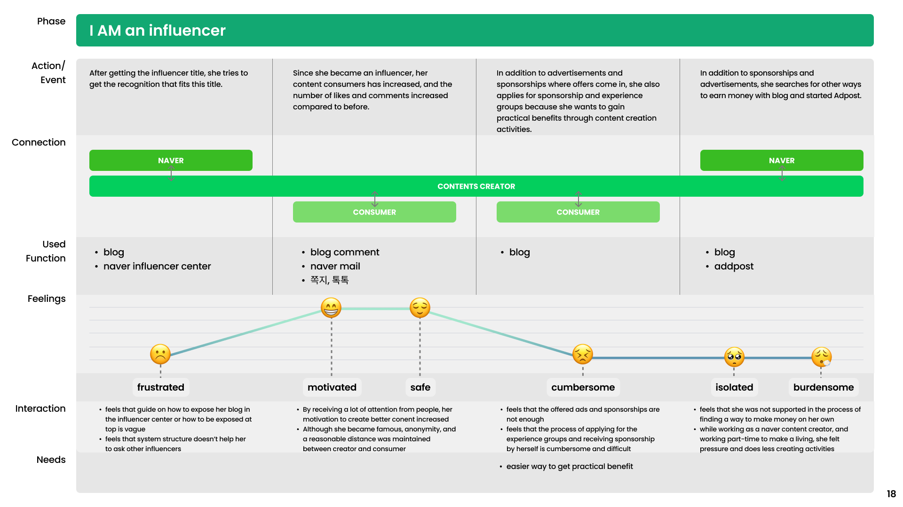
Common Features Found in Creator Journey
To narrow down the problem, we looked at common features between different steps of journey to become influencers. Based on that, we came out with eight main problems.
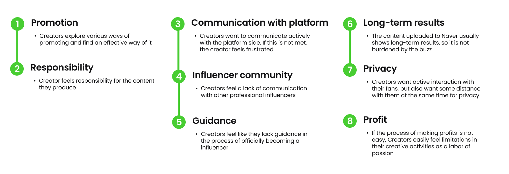
VIP model
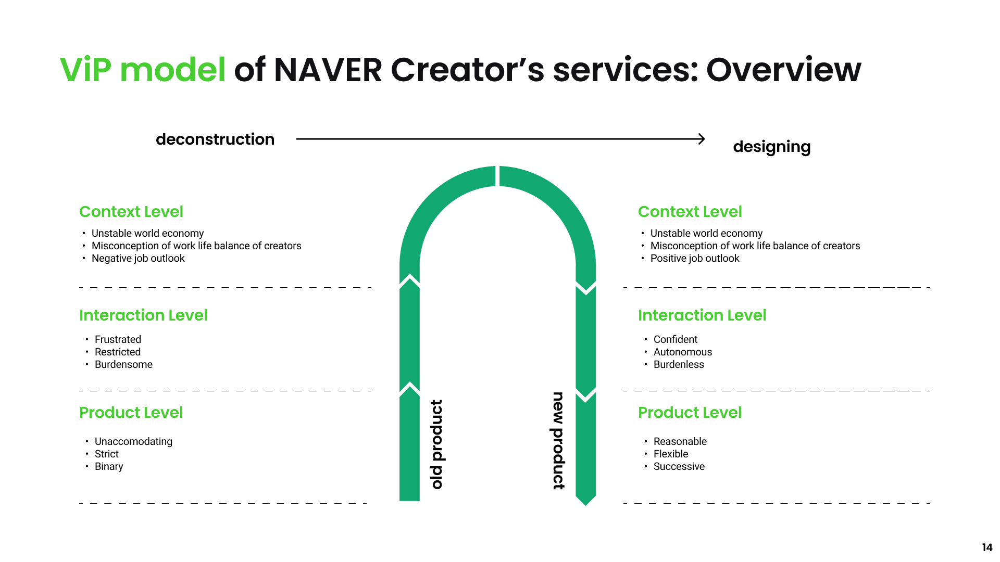
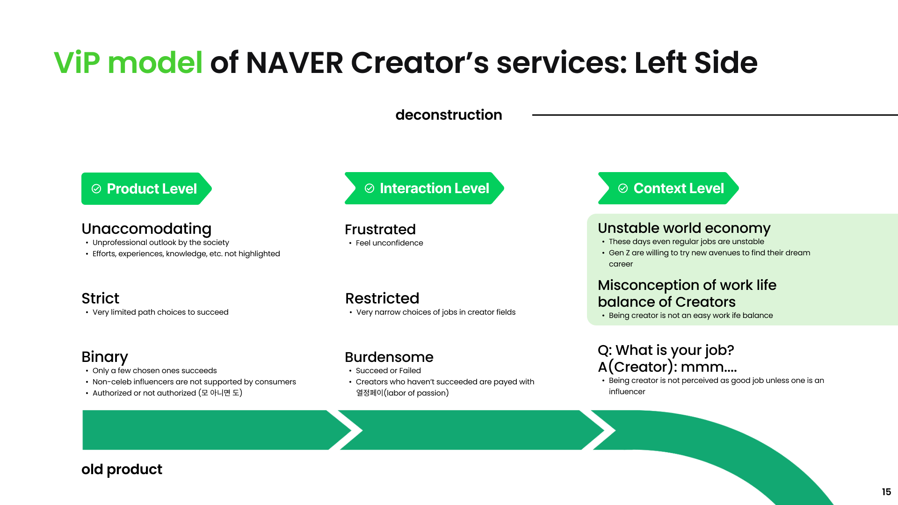
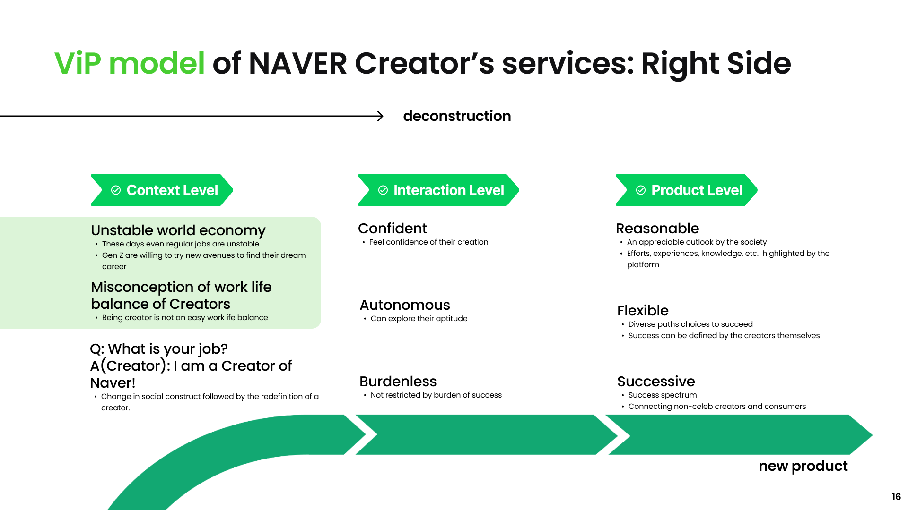
Solution Direction
We finally settled on the best solution for the creators: Giving a Sense of Accomplishment.
The question is, when does a creator feel a sense of accomplishement? Within our previously done research, we found two answers:
- By communicating with others
- By seeing how they affect others
Therefore, we started building a tool that facilitates those interactions: a collaborative networking system for bloggers.
Final Solution
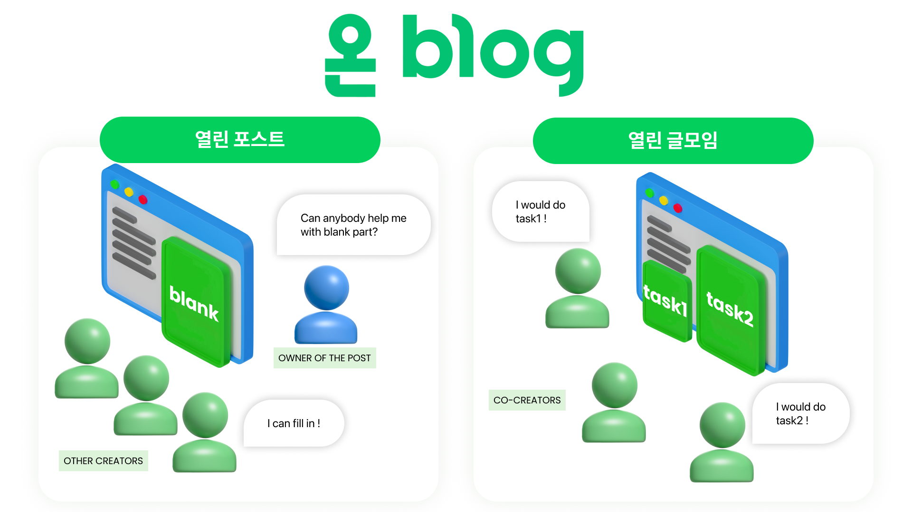
The 온 blog proposes a new system structure to enhance sense of accomplishment in the process of collaboration. The first system, 열린 포스트 (an open post), allows the owner of the post to invite all other creators to fill-in the content their posts need in a form of a “call to collaborate”. The other system, 열린 글모임 (an open writing meeting), is for established collaborators, who need a system to facilitate smoother collaborations in the editing environment of Naver blog.
About This Project
This project was conducted as a part of System Design course at ID KAIST, thanks to Naver. The project was a result of a team effort from Jian Jun, Jeongjae Lee, Hyerim Hwang, Zofia Marciniak, Adil Hassan Khan.
Figma Prototype
Below is a detailed presentation with the background research. Please use fullscreen mode to view.